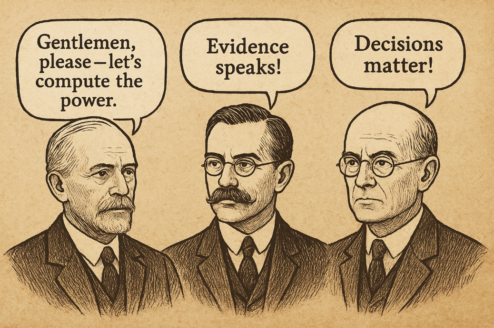
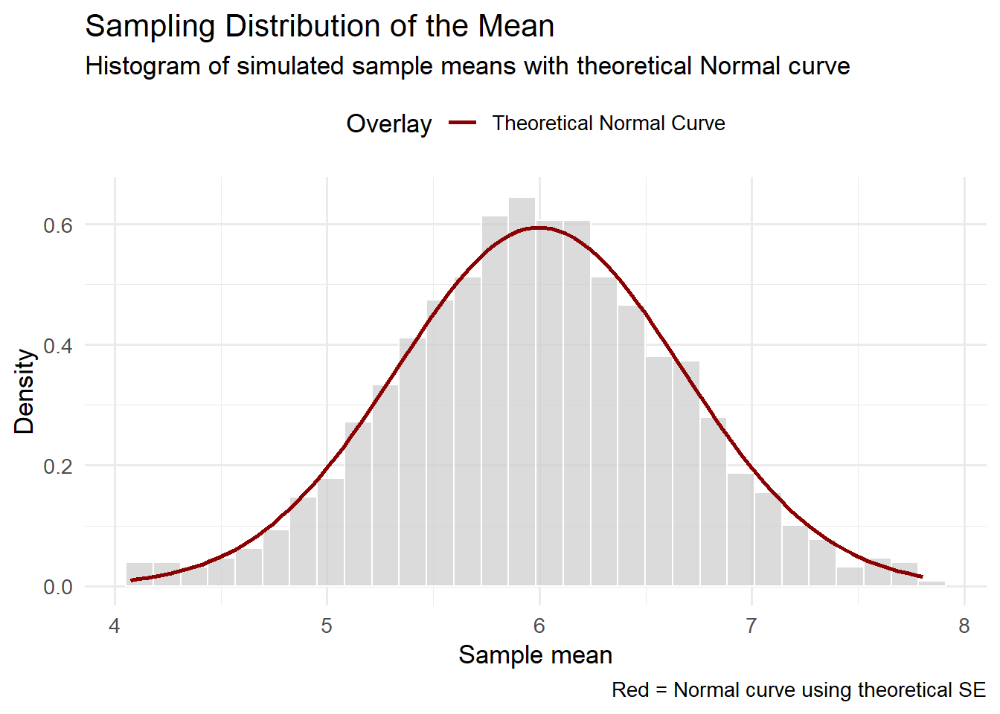
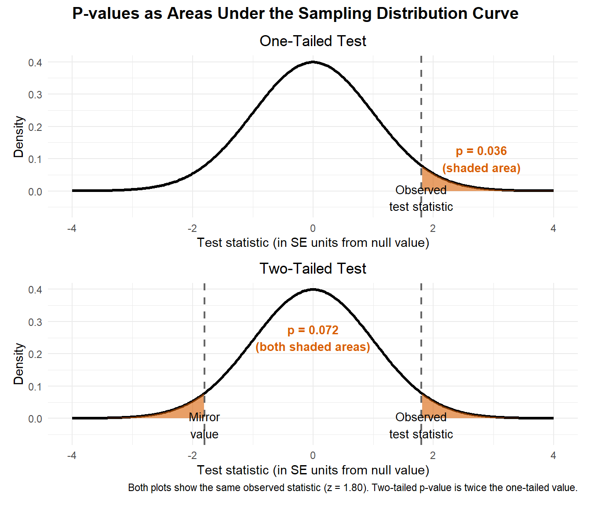
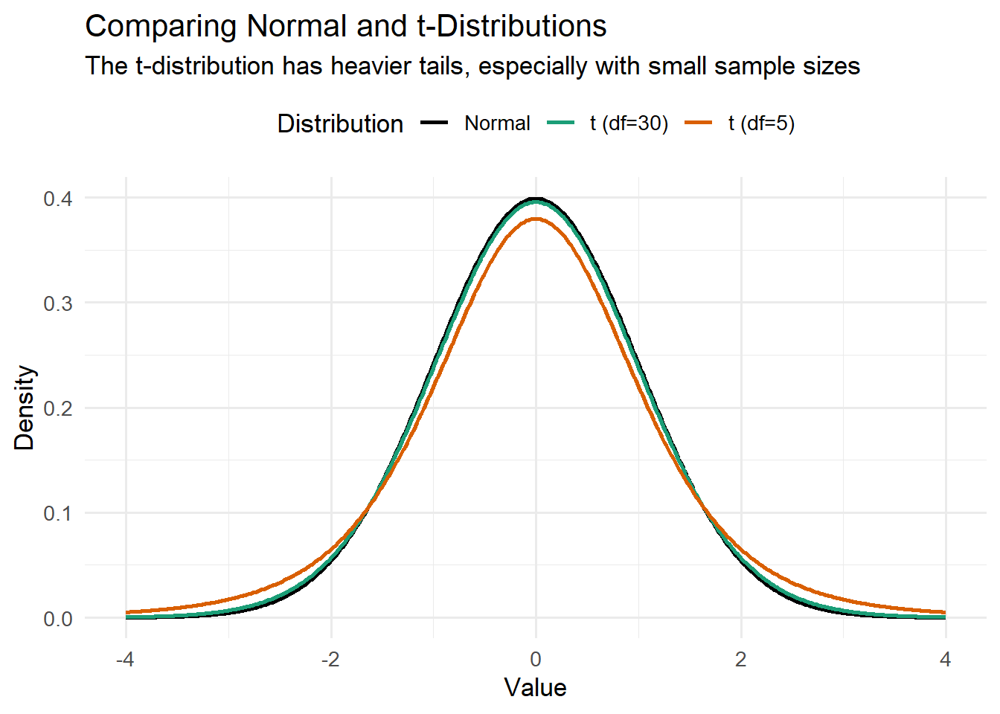
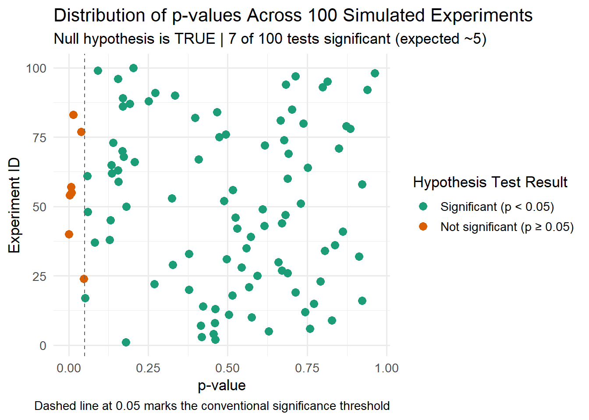
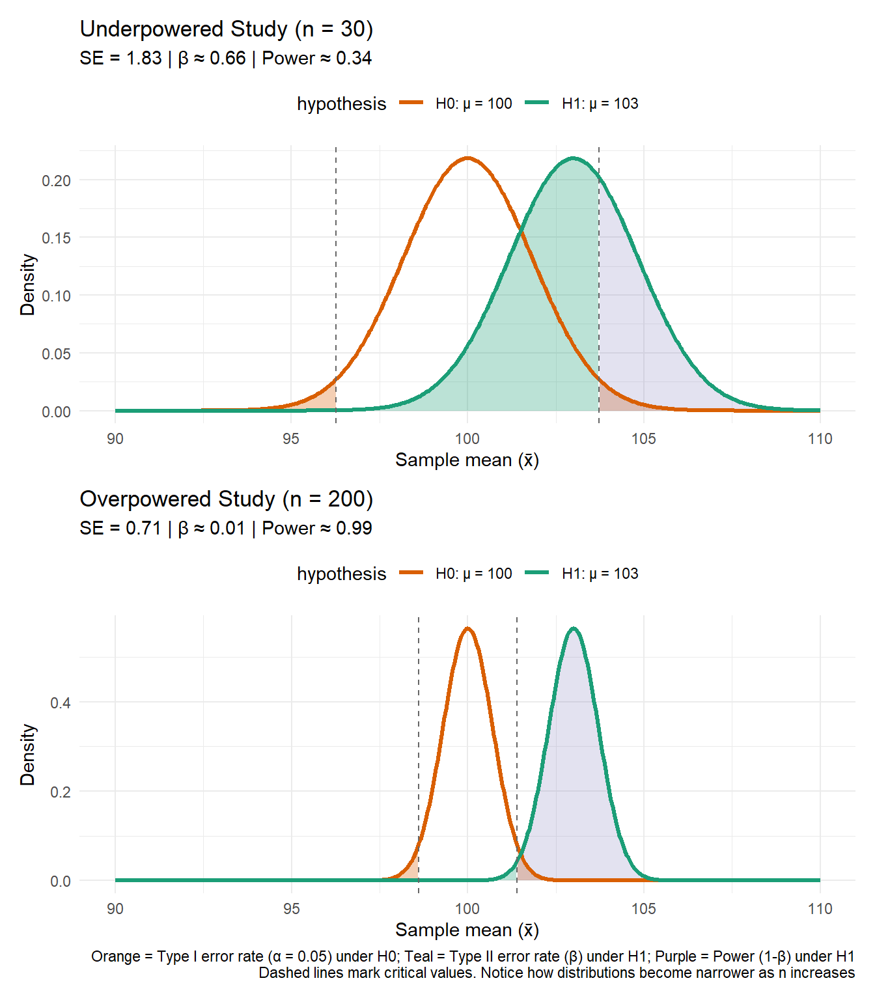
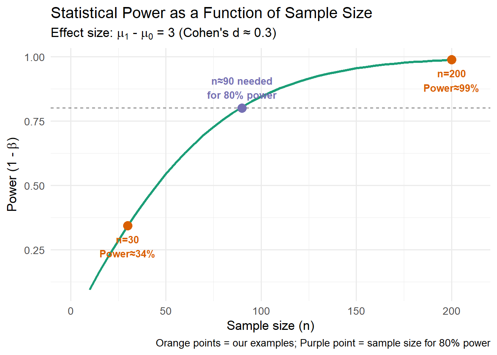

From Sampling Distributions to Statistical Decisions: A Visual Introduction
frequentist
inference
bayesian
Author
Stefan Schreiber
Published
October 12, 2025

When in doubt, repeat the experiment forever. ;P
Introduction
Imagine a pharmaceutical company testing a new drug on 50 patients. The average improvement is promising, but is this evidence of a real effect, or could it have happened by chance? This is precisely the kind of question frequentist inference helps us answer.
When we perform classical inferential statistics, we are not actually interested in the particular data points we collected. Those values are just one random realization out of many possible samples we could have drawn. Instead, what we really care about are the parameters of the population that gave rise to the observed sample.
For example, the population mean might be our primary target, and the individual values in our dataset are simply the lens through which we try to see it. This distinction between sample and population is critical: the sample is observable and finite, while the population is unobservable and often very large (sometimes treated as infinite for convenience).
In the frequentist framework, our task is to use what we can see – the sample – to make probabilistic statements about what we cannot – the population. All the machinery of frequentist inference (standard errors, confidence intervals, and p-values) rests on this gap between what we can observe and what we ultimately want to know. We bridge that gap by invoking assumptions about the data-generating process.
One of the most fundamental is the independent and identically distributed (i.i.d.) assumption. It envisions each observation as arising from repeated sampling under the same conditions – that is, every data point is drawn from the same probability distribution, and each draw is independent of the others. This assumption provides a solid foundation for basic inferential tools, though it’s worth noting that many modern statistical methods (mixed models, time series analysis, spatial statistics) have been developed specifically to handle violations of independence and identical distribution. The \(i.i.d.\) assumption is our starting point, not a universal requirement for all statistical inference.
Understanding Variability: The Sampling Distribution and Standard Error
To understand how we learn about populations from samples, we need to think about variability. If we repeatedly sample from the same population, our sample statistics (like the mean) will vary from sample to sample. Understanding this variability is the key to quantifying our uncertainty.
Imagine we take a sample of 20 data points from a normal distribution with mean 6 and standard deviation 3. The mean of that sample will vary from experiment to experiment, but on average, it should be close to 6. To visualize this, we can repeat the experiment many times, calculating the mean each time, and then examine the distribution of those sample means. What we get is known as the sampling distribution of the mean. Its center is close to the true population mean (6 in this case), but its spread is smaller than the spread of the original data because we are averaging across multiple points.
Show code
library(tidyverse)set.seed(123)n <-20true_mu <-6true_sd <-3sample_means <-replicate(1000, mean(rnorm(n, true_mu, true_sd)))se_theoretical <- true_sd /sqrt(n)df <-tibble(x = sample_means)ggplot(df, aes(x = x)) +geom_histogram(aes(y =after_stat(density)), bins =30, fill ="grey80", color ="white", alpha =0.7) +stat_function(fun = dnorm, args =list(mean = true_mu, sd = se_theoretical),aes(color ="Theoretical Normal Curve"), linewidth =1) +scale_color_manual(name ="Overlay", values =c("Theoretical Normal Curve"="darkred")) +labs(title ="Sampling Distribution of the Mean",subtitle ="Histogram of simulated sample means with theoretical Normal curve",x ="Sample mean",y ="Density",caption ="Red = Normal curve using theoretical SE" ) +theme_minimal(base_size =13) +theme(legend.position ="top")

The standard deviation of this sampling distribution is called the standard error of the mean (SE). It captures how much variability we expect in the sample mean if we were to repeat the sampling process many times. Crucially, the SE can be estimated directly from a single dataset using the formula \(\text{SE} = s/\sqrt{n}\), provided the \(i.i.d.\) assumption holds reasonably well.
A technical note: In practice, we use the sample standard deviation \(s\) to estimate the population standard deviation \(\sigma\). This introduces additional uncertainty that we’ll need to account for when we build confidence intervals – but more on that later.
Why the Normal Distribution Matters
Notice how closely the empirical sampling distribution above matches the theoretical normal curve (red line). This is no coincidence – it’s a consequence of the Central Limit Theorem (CLT), which states that the sampling distribution of the mean tends toward a normal distribution as sample size increases, even if the underlying data aren’t normally distributed, as long as the observations are independent and identically distributed (Casella & Berger, 2002).
This distribution, also known as the Gaussian distribution after Carl Friedrich Gauss who studied it extensively in the early 19th century (though it was discovered earlier by de Moivre (De Moivre, 1738; Stigler, 1986)), has remarkable properties that make it central to statistical inference.
This normality of the sampling distribution is fundamental because:
It’s mathematically well-defined: The normal distribution is symmetric with known properties, allowing us to calculate precise probabilities.
It enables p-value calculations: We can determine exactly how extreme our observed statistic is under the null hypothesis.
It justifies confidence intervals: We know what multiplier to use (from the t-distribution) to achieve desired coverage probabilities.
It provides known error rates: Our Type I error rate (\(\alpha\)) is controlled at exactly the level we specify.
When assumptions fail: If the \(i.i.d.\) assumptions are violated – such as with strong dependence between observations, severe skewness combined with small sample sizes, or non-identical distributions – the sampling distribution may not follow this normal shape. In such cases, our p-values, confidence intervals, and error rates become unreliable. This is why checking assumptions and considering robust or alternative methods is crucial when working with real data.
Now that we understand that the sampling distribution is approximately normal (thanks to the CLT), we can leverage this mathematical property to make two types of inferential statements. First, we can test specific hypotheses about parameter values. Second, we can construct intervals that quantify our uncertainty. Let’s examine hypothesis testing first.
From Sampling to the Null Hypothesis and the p-value
When we test a hypothesis, we are still operating within the framework of repeated sampling under identical conditions. The modern theory of hypothesis testing was developed primarily by Ronald A. Fisher, Jerzy Neyman, and Egon Pearson in the early 20th century. Fisher’s foundational work (Fisher, 1925) introduced many of the concepts we use today, including the p-value and significance testing, while Neyman and Pearson (Neyman & Pearson, 1933) formalized the decision-theoretic framework with Type I and Type II errors.
The null hypothesis\(H_0\) defines a specific statistical model – a precise claim about the data-generating process. It might specify that a population mean equals a particular value, that two groups have identical distributions, or that a correlation is zero.
If \(H_0\) is true, then the sample statistic we observe (like a mean or difference) is just one realization from the sampling distribution under that null model. The p-value quantifies how extreme our observed test statistic is relative to this null distribution.
More precisely: the p-value is the probability, assuming \(H_0\) is true, of obtaining a test statistic at least as extreme as the one we observed. Here, “extreme” means far from what the null model predicts – in the direction(s) specified by our alternative hypothesis. In a two-sided test, that means results far from the null expectation in either direction; in a one-sided test, it means results far out in the specified direction of the alternative.
Geometrically, the p-value is the area under the sampling distribution curve in the tail(s) beyond our observed test statistic. This is why the normality of the sampling distribution (thanks to the CLT) is so crucial: it allows us to calculate these tail areas precisely using well-established mathematical properties. Remarkably, we estimate this entire theoretical sampling distribution from our single sample – the sample mean centers the distribution, and the standard error determines its spread. Once we have this distribution, calculating the p-value becomes a matter of finding what proportion of the total area lies in the extreme region(s) where our observation falls.
Show code
library(ggplot2)library(patchwork)library(dplyr)# Observed test statisticobs_stat <-1.8# Create normal distribution datax <-seq(-4, 4, length.out =400)y <-dnorm(x)df_full <-data.frame(x, y)# Subsets for shadingdf_right <- df_full %>%filter(x >= obs_stat)df_left <- df_full %>%filter(x <=-obs_stat)# Calculate p-valuesp_one <-pnorm(obs_stat, lower.tail =FALSE)p_two <-2* p_one# One-tailed plotp1 <-ggplot(df_full, aes(x, y)) +geom_line(linewidth =1.2, color ="black") +geom_area(data = df_right, aes(x, y), fill ="#d95f02", alpha =0.6) +geom_vline(xintercept = obs_stat, linetype ="dashed", color ="grey40", linewidth =0.8) +annotate("text", x = obs_stat, y =-0.02, label ="Observed\ntest statistic", size =3.5, hjust =0.5) +annotate("text", x =2.8, y =0.1, label =sprintf("p = %.3f\n(shaded area)", p_one), size =3.5, color ="#d95f02", fontface ="bold") +scale_y_continuous(expand =expansion(mult =c(0.15, 0.05))) +labs(title ="One-Tailed Test",x ="Test statistic (in SE units from null value)", y ="Density") +theme_minimal(base_size =11) +theme(plot.title =element_text(hjust =0.5))# Two-tailed plotp2 <-ggplot(df_full, aes(x, y)) +geom_line(linewidth =1.2, color ="black") +geom_area(data = df_right, aes(x, y), fill ="#d95f02", alpha =0.6) +geom_area(data = df_left, aes(x, y), fill ="#d95f02", alpha =0.6) +geom_vline(xintercept =c(-obs_stat, obs_stat), linetype ="dashed", color ="grey40", linewidth =0.8) +annotate("text", x = obs_stat, y =-0.02, label ="Observed\ntest statistic", size =3.5, hjust =0.5) +annotate("text", x =-obs_stat, y =-0.02, label ="Mirror\nvalue", size =3.5, hjust =0.5) +annotate("text", x =0, y =0.25, label =sprintf("p = %.3f\n(both shaded areas)", p_two), size =3.5, color ="#d95f02", fontface ="bold") +scale_y_continuous(expand =expansion(mult =c(0.15, 0.05))) +labs(title ="Two-Tailed Test",x ="Test statistic (in SE units from null value)", y ="Density",caption =sprintf("Both plots show the same observed statistic (z = %.2f). Two-tailed p-value is twice the one-tailed value.", obs_stat )) +theme_minimal(base_size =11) +theme(plot.title =element_text(hjust =0.5))# Combine plotsp1 / p2 +plot_annotation(title ="P-values as Areas Under the Sampling Distribution Curve",theme =theme(plot.title =element_text(size =14, face ="bold", hjust =0.5)))

A small p-value tells us that our observed data would be quite surprising under repeated sampling from the null model, which gives us reason to doubt that model. However, it’s crucial to understand what the p-value is not(Wasserstein & Lazar, 2016):
Common P-value Misconceptions
✗ “p = 0.03 means there’s a 3% chance the null hypothesis is true”.
✗ “p = 0.06 means the study failed”.
✗ “p < 0.05 means the effect is important”.
✗ “The p-value is the probability that the results occurred by chance”.
✓ “p = 0.03 means data this extreme would occur 3% of the time if\(H_0\) were true”.
The p-value only tells us about the compatibility between our data and one specific null model. It does not tell us the size or importance of an effect, and it does not tell us whether we’ve made a mistake.
Building Confidence Intervals
Hypothesis testing asks “Is our result compatible with a specific null value?” But there’s a complementary question: “What range of parameter values are plausibly compatible with our data?” This is where confidence intervals come in.
Both hypothesis testing and confidence intervals rely on the same foundation: the standard error and the sampling distribution we explored earlier. The difference is in what question they answer.
How Confidence Intervals Are Constructed
Recall that the standard error (SE) measures the expected variability of the sample mean across repeated samples. We calculate it as \(\text{SE} = s/\sqrt{n}\), where \(s\) is the sample standard deviation and \(n\) is the sample size.
To build a confidence interval, we take our sample mean and add/subtract a margin of error:
The critical value is a multiplier that determines how wide our interval should be. Think of it as answering the question: “How many standard errors away from our estimate should we go to capture the true parameter with 95% confidence?”
But here’s where a subtle complication arises…
From Theory to Practice: Why We Need the t-Distribution
So far, we’ve been using the formula \(\text{SE} = s/\sqrt{n}\) as if it were straightforward. But there’s a subtle issue here: we’re using the sample standard deviation \(s\) to estimate the population standard deviation \(\sigma\). This creates a problem.
When we simulate the sampling distribution (as we did earlier), we know the true population parameters. But in real data analysis, we never know \(\sigma\) – we can only estimate it from our sample. This estimation adds an extra source of uncertainty that the normal distribution doesn’t account for.
Enter the t-distribution. William Sealy Gosset (writing under the pseudonym “Student”) discovered that when we replace \(\sigma\) with \(s\), the sampling distribution is no longer exactly normal – it follows what we now call Student’s t-distribution (Student, 1908). The key features are:
It has heavier tails than the normal distribution (more probability in the extremes).
It’s wider than the normal distribution, reflecting our additional uncertainty.
As sample size increases, it converges to the normal distribution.
It has a parameter called “degrees of freedom” (\(df = n - 1\)), which controls how wide it is.
For small samples, using the normal distribution would give us confidence intervals that are too narrow – they’d capture the true parameter less than 95% of the time. The t-distribution corrects for this, giving us appropriately wider intervals that maintain the correct coverage probability.
Let’s see this difference visually:
Show code
# Compare normal vs t-distributionx <-seq(-4, 4, length.out =500)df_compare <-tibble(x = x,Normal =dnorm(x),`t (df=5)`=dt(x, df =5),`t (df=30)`=dt(x, df =30)) %>%pivot_longer(cols =-x, names_to ="distribution", values_to ="density")ggplot(df_compare, aes(x = x, y = density, color = distribution)) +geom_line(linewidth =1) +labs(title ="Comparing Normal and t-Distributions",subtitle ="The t-distribution has heavier tails, especially with small sample sizes",x ="Value",y ="Density",color ="Distribution" ) +scale_color_manual(values =c("Normal"="black", "t (df=5)"="#d95f02", "t (df=30)"="#1b9e77")) +theme_minimal(base_size =13) +theme(legend.position ="top")

Notice how the t-distribution with 5 degrees of freedom (orange) has much heavier tails than the normal distribution (black). With 30 degrees of freedom (green), it’s already quite close to normal. This is why the t-distribution matters most for small samples.
What a Confidence Interval Really Means
Now that we understand why we use the t-distribution instead of the normal distribution, let’s clarify what our resulting confidence intervals actually mean – and more importantly, what they don’t mean.
A 95% confidence interval does not mean there is a 95% probability that the true mean lies within a particular observed interval. In the frequentist framework, the parameter is fixed (though unknown), so it either is or isn’t in any particular interval – there’s no probability involved once we’ve observed our data.
Instead, the 95% refers to the procedure: if we repeated the entire sampling and interval-construction process infinitely many times, about 95% of those intervals would contain the true population mean. Our single observed interval is just one realization from this process.
The practical challenge: While this frequentist interpretation is logically sound, it doesn’t directly answer the question most researchers want answered: “What can I say about my single observed interval?” This tension between the procedure’s long-run properties and what we can infer from one dataset is an inherent limitation of the frequentist approach.
The Connection Between Confidence Intervals and Hypothesis Tests
You may have noticed that confidence intervals and hypothesis tests both use the same ingredients: the sample statistic, the standard error, and critical values from the \(t\)-distribution. This is no accident – they are mathematically linked procedures that provide complementary information.
The connection is elegant: if a 95% confidence interval excludes a particular null value, then a two-sided hypothesis test at \(\alpha = 0.05\) will reject that null value (\(p < 0.05\)). Conversely, if the CI includes the null value, the test will not reject it (\(p ≥ 0.05\)).
This relationship exists because both procedures rely on the same sampling distribution. The confidence interval shows us the range of null values we wouldn’t reject, while the hypothesis test tells us whether one specific null value would be rejected.
Let’s visualize this connection using the same 100 simulated experiments from above. We’ll now compute p-values for testing whether the true mean equals zero:
Show code
draws <- draws %>%mutate(t_statistic = (sample_mean - mu) / sample_se,p_value =2* (1-pt(abs(t_statistic), df = n -1)),significant = p_value <0.05 )n_significant <-sum(draws$significant)ggplot(draws, aes(x = p_value, y = experiment_id, color = significant)) +geom_point(size =3) +geom_vline(xintercept =0.05, linetype ="dashed", color ="grey40") +scale_color_manual(name ="Hypothesis Test Result",values =c("TRUE"="#d95f02", "FALSE"="#1b9e77"),labels =c("Significant (p < 0.05)", "Not significant (p ≥ 0.05)") ) +labs(title ="Distribution of p-values Across 100 Simulated Experiments",subtitle =sprintf("Null hypothesis is TRUE | %d of 100 tests significant (expected ~5)", n_significant),x ="p-value",y ="Experiment ID",caption ="Dashed line at 0.05 marks the conventional significance threshold" ) +theme_minimal(base_size =13) +theme(legend.position ="right")

Notice that the experiments with orange points (significant p-values) are exactly those whose confidence intervals (in the previous plot) excluded zero. This perfect correspondence illustrates the deep mathematical connection between these two inferential approaches.
Key insight: When the null hypothesis is true (as in this simulation), approximately 5% of our tests will incorrectly yield p < 0.05. This is the Type I error rate, \(\alpha\), which we set when we chose the 0.05 threshold. This brings us to a crucial question: what types of errors can occur in hypothesis testing, and how can we control them?
Decisions, Errors, and Power
Once we have a p-value, we compare it to a chosen threshold – the significance level, denoted by α. If the p-value is smaller than \(\alpha\) (commonly 0.05), we reject \(H_0\); otherwise, we fail to reject it.
Because statistical inference is based on hypothetical repeated sampling, two kinds of mistakes are always possible (Neyman & Pearson, 1933):
Type I error (false positive): Rejecting \(H_0\) when it is actually true.
The probability of this error is the significance level, \(\alpha\).
Type II error (false negative): Failing to reject \(H_0\) when it is actually false.
The probability of this error is \(\beta\).
Power (\(1 - \beta\)): The probability of correctly rejecting \(H_0\) when it is false.
The test’s sensitivity to real effects.
We can visualize these ideas by comparing two sampling distributions: one under the null hypothesis and another under the alternative hypothesis. The overlap between them illustrates the trade-off between \(\alpha\) and \(\beta\): reducing one typically increases the other (for a fixed sample size and effect size).
Show code
set.seed(42)# Function to create error/power plot datacreate_error_plot_data <-function(n, mu_null =100, mu_alt =103, sd_pop =10, alpha =0.05) { se <- sd_pop /sqrt(n) t_crit <-qt(1- alpha /2, df = n -1) lower_crit <- mu_null - t_crit * se upper_crit <- mu_null + t_crit * se x_vals <-seq(90, 110, length.out =500) null_dist <-dnorm(x_vals, mean = mu_null, sd = se) alt_dist <-dnorm(x_vals, mean = mu_alt, sd = se)# Calculate beta beta <-pnorm(upper_crit, mean = mu_alt, sd = se) -pnorm(lower_crit, mean = mu_alt, sd = se) power <-1- beta df <-tibble(x =rep(x_vals, 2),density =c(null_dist, alt_dist),hypothesis =rep(c("H0: μ = 100", "H1: μ = 103"), each =length(x_vals)) ) alpha_region <-tibble(x = x_vals[x_vals < lower_crit | x_vals > upper_crit],y =dnorm(x_vals[x_vals < lower_crit | x_vals > upper_crit], mean = mu_null, sd = se) ) beta_region <-tibble(x = x_vals[x_vals >= lower_crit & x_vals <= upper_crit],y =dnorm(x_vals[x_vals >= lower_crit & x_vals <= upper_crit], mean = mu_alt, sd = se) )list(df = df, alpha_region = alpha_region, beta_region = beta_region,lower_crit = lower_crit, upper_crit = upper_crit, se = se, beta = beta, power = power)}# Create data for n=30 (underpowered)data_30 <-create_error_plot_data(n =30)# Create data for n=200 (overpowered)data_200 <-create_error_plot_data(n =200)# Plot for n=30p1 <-ggplot(data_30$df, aes(x = x, y = density, color = hypothesis)) +geom_line(linewidth =1.2) +geom_area(data = data_30$alpha_region, aes(x = x, y = y), fill ="#d95f02", alpha =0.3, color =NA) +geom_area(data = data_30$beta_region, aes(x = x, y = y), fill ="#1b9e77", alpha =0.3, color =NA) +geom_vline(xintercept =c(data_30$lower_crit, data_30$upper_crit), linetype ="dashed", color ="grey40") +labs(title ="Underpowered Study (n = 30)",subtitle =sprintf("SE = %.2f | β ≈ %.2f | Power ≈ %.2f", data_30$se, data_30$beta, data_30$power),x ="Sample mean (x̄)",y ="Density" ) +scale_color_manual(values =c("H0: μ = 100"="#d95f02", "H1: μ = 103"="#1b9e77")) +theme_minimal(base_size =11) +theme(legend.position ="top")# Plot for n=200p2 <-ggplot(data_200$df, aes(x = x, y = density, color = hypothesis)) +geom_line(linewidth =1.2) +geom_area(data = data_200$alpha_region, aes(x = x, y = y), fill ="#d95f02", alpha =0.3, color =NA) +geom_area(data = data_200$beta_region, aes(x = x, y = y), fill ="#1b9e77", alpha =0.3, color =NA) +geom_vline(xintercept =c(data_200$lower_crit, data_200$upper_crit), linetype ="dashed", color ="grey40") +labs(title ="Overpowered Study (n = 200)",subtitle =sprintf("SE = %.2f | β ≈ %.2f | Power ≈ %.2f", data_200$se, data_200$beta, data_200$power),x ="Sample mean (x̄)",y ="Density",caption ="Orange = Type I error (α = 0.05); Teal = Type II error (β)\nDashed lines mark critical values. Notice how distributions become narrower as n increases" ) +scale_color_manual(values =c("H0: μ = 100"="#d95f02", "H1: μ = 103"="#1b9e77")) +theme_minimal(base_size =11) +theme(legend.position ="top")# Combine plots verticallylibrary(patchwork)p1 / p2

Interpreting the Plots
Top panel (n = 30 - Underpowered):
The orange curve shows the sampling distribution if \(H_0: \mu = 100\) is true.
The green curve shows the sampling distribution if \(H_1: \mu = 103\) is true.
Standard error is \(\text{SE} \approx 1.83\), creating relatively wide, overlapping distributions.
Type II error \(\beta \approx 0.63\) (large teal area) means we’d miss the true effect 63% of the time.
Power \(\approx 0.37\) (only 37% chance of detecting the true effect).
Bottom panel (n = 200 - Overpowered):
Same hypotheses, but now \(\text{SE} \approx 0.71\) (much smaller due to very large sample size).
The distributions are extremely narrow with almost no overlap.
Type II error \(\beta \approx 0.00\) (virtually no teal area) means we’d almost never miss the true effect.
Power \(\approx 1.00\) (nearly 100% chance of detecting the true effect).
Key observations:
The comparison reveals an important trade-off in study design. This tension between statistical and practical significance is particularly problematic in fields where underpowered studies are common (Button et al., 2013), leading to inflated effect size estimates and poor replication rates:
Too small (n=30): High risk of missing real effects, wasting research effort and potentially leading to false conclusions.
Too large (n=200): Excessive power means collecting far more data than necessary, wasting time, money, and resources.
While the underpowered study clearly has problems, the overpowered study also raises concerns. Beyond a certain point, additional data provides diminishing returns – power increases very little while costs continue to mount. Moreover, with very large samples, even trivially small effects become “statistically significant,” which doesn’t necessarily mean they’re practically meaningful.
The Goldilocks principle of sample size: We need a sample size that’s “just right” – large enough to reliably detect effects that matter, but not so large that we waste resources or detect effects too small to care about. This is why prospective power analysis is essential for efficient research design.
Planning Sample Size Through Prospective Power Analysis
The side-by-side comparison above revealed a critical challenge: too little power (n=30) risks missing real effects, while excessive power (n=200) wastes resources and may detect effects too trivial to matter. This raises a practical question: rather than guessing what constitutes an adequate sample size, how can we systematically determine the optimal n for our specific goals?
The answer lies in prospective power analysis – plotting the relationship between sample size and power to find the sweet spot:
Show code
# Define parameters (same as used in previous visualization)mu_null <-100mu_alt <-103sd_pop <-10alpha <-0.05# Calculate power for different sample sizescalculate_power <-function(n, mu_null, mu_alt, sd_pop, alpha =0.05) { se <- sd_pop /sqrt(n) t_crit <-qt(1- alpha /2, df = n -1) lower_crit <- mu_null - t_crit * se upper_crit <- mu_null + t_crit * se power <-pnorm(lower_crit, mean = mu_alt, sd = se) + (1-pnorm(upper_crit, mean = mu_alt, sd = se))return(power)}sample_sizes <-seq(10, 200, by =5)power_values <-map_dbl(sample_sizes, ~calculate_power(.x, mu_null, mu_alt, sd_pop))power_df <-tibble(n = sample_sizes, power = power_values)# Find sample size needed for 80% powern_for_80_power <- sample_sizes[which.min(abs(power_values -0.80))]# Calculate power for sample size of 30power_at_n30 <-calculate_power(30, mu_null, mu_alt, sd_pop)# Calculate power for sample size of 200power_at_n200 <-calculate_power(200, mu_null, mu_alt, sd_pop)ggplot(power_df, aes(x = n, y = power)) +geom_line(color ="#1b9e77", linewidth =1.2) +geom_hline(yintercept =0.80, linetype ="dashed", color ="grey40") +annotate("point", x =30, y = power_at_n30, color ="#d95f02", size =4) +annotate("point", x =200, y = power_at_n200, color ="#d95f02", size =4) +annotate("point", x = n_for_80_power, y =0.80, color ="#7570b3", size =4) +annotate("text", x =30, y = power_at_n30 -0.08, label =sprintf("n=30\nPower≈%.0f%%", power_at_n30*100), color ="#d95f02", size =3.5, fontface ="bold") +annotate("text", x =200, y = power_at_n200 -0.08, label =sprintf("n=200\nPower≈%.0f%%", power_at_n200*100), color ="#d95f02", size =3.5, fontface ="bold") +annotate("text", x = n_for_80_power, y =0.88, label =sprintf("n≈%d needed\nfor 80%% power", n_for_80_power), color ="#7570b3", size =3.5, fontface ="bold") +scale_x_continuous(limits =c(0, 210)) +labs(title ="Statistical Power as a Function of Sample Size",subtitle =expression(paste("Effect size: ", mu[1], " - ", mu[0], " = 3 (Cohen's d ≈ 0.3)")),x ="Sample size (n)",y =expression(paste("Power (1 - ", beta, ")")),caption ="Orange points = our examples; Purple point = sample size for 80% power" ) +theme_minimal(base_size =13)

Key insights: - At n = 30, power is only about 38% – inadequate for reliable detection. - At n = 200, power is nearly 100% – far more than needed, representing wasted resources. - To achieve conventional 80% power for this effect size, we’d need approximately n ≈ 85. - Larger sample sizes increase power by decreasing the standard error (\(\text{SE} = s/\sqrt{n}\)). Smaller SE means narrower. sampling distributions, which creates better separation between the null and alternative distributions, reducing overlap and making true effects easier to detect. - This is why prospective power analysis is crucial for study design – it helps us determine the sample size needed to detect effects of meaningful magnitude with adequate probability (Cohen, 1988).
Practical lesson: The error and power visualization showed us the problem (low power with n=30), and this plot shows us the solution (increase sample size to approximately 85). This demonstrates why researchers should conduct power analyses before collecting data, not after!
Now that we understand how to plan studies and interpret individual tests, we need to confront a more subtle challenge: what happens when we conduct not just one test, but many? And beyond statistical significance, how do we assess whether effects actually matter in practice?
The Multiple Testing Problem and Effect Sizes
So far, we’ve focused on interpreting a single hypothesis test. But real research rarely involves just one test. What happens when we conduct multiple comparisons? And beyond statistical significance, how do we assess whether an effect actually matters? These questions lead us to two critical issues in applied statistics.
Multiple Testing Inflates False Positives
Important distinction: This problem applies to multiple tests on the same data, not to independent replication studies. If different researchers independently test the same hypothesis on different datasets, those p-values shouldn’t be corrected for multiple testing – that’s replication, which is exactly what science needs!
When conducting multiple hypothesis tests within the same study or dataset, a critical issue emerges: false positives accumulate. If you conduct 100 tests on the same dataset where all null hypotheses are true at \(\alpha = 0.05\), you expect about 5 false positives purely by chance.
Examples where correction is needed:
Testing 20 different biomarkers to see which predict disease.
Comparing 5 treatment groups (resulting in 10 pairwise comparisons).
Testing the same intervention across 15 different outcomes.
Exploratory analysis where you examine many potential relationships.
Why this matters:
Without correction, the probability of getting at least one false positive increases dramatically.
With 20 independent tests at \(\alpha = 0.05\), there’s a 64% chance of at least one false positive even if all nulls are true (\(1 - (1-0.05)^{20} = 1 - 0.95^{20} \approx 0.64\)).
This is why multiple testing corrections (Bonferroni, FDR control (Benjamini & Hochberg, 1995), Holm-Bonferroni) are essential.
Practical implication: When you conduct multiple tests, either:
Clearly distinguish exploratory vs. confirmatory analyses.
Pre-register your primary hypothesis to avoid the “multiple testing” critique.
The “replication crisis” in many sciences is partly attributable to (Ioannidis, 2005):
Running many tests but only reporting the significant ones.
Not correcting for multiple comparisons.
Treating exploratory findings as if they were confirmatory.
A single \(p < 0.05\) result should never be considered definitive evidence. Replication, effect sizes, and consideration of prior plausibility are all crucial.
Statistical vs. Practical Significance
Another crucial distinction: statistical significance is not the same as practical importance. With a large enough sample size, even tiny, meaningless differences will yield \(p < 0.05\). For example:
Show code
# Simulate a trivially small effect with large sample sizeset.seed(999)n_large <-10000small_effect <-0.05# Tiny effect: 0.05 SD differencegroup1 <-rnorm(n_large, mean =0, sd =1)group2 <-rnorm(n_large, mean = small_effect, sd =1)t_result <-t.test(group1, group2)cohens_d <- small_effect /1# Effect size in SD unitsresults_df <-tibble(Metric =c("Sample size per group", "Cohen's d (effect size)", "p-value", "Mean difference"),Value =c(format(n_large, big.mark =","),sprintf("%.3f", cohens_d),sprintf("%.6f", t_result$p.value),sprintf("%.3f", diff(t_result$estimate)) ))knitr::kable(results_df, align =c("l", "r"))
Metric
Value
Sample size per group
10,000
Cohen’s d (effect size)
0.050
p-value
0.000049
Mean difference
0.058
This hypothetical example shows that with 10,000 observations per group, we can detect an effect size of only 0.05 standard deviations with high confidence – but such a small effect is likely meaningless in most practical contexts.
Key principle: Always report and interpret effect sizes alongside p-values (Cohen, 1994). Ask not just “Is there an effect?” but “How large is the effect, and does that matter?”
This tension between statistical and practical significance naturally raises another question: under what conditions can we trust these inferential procedures? Throughout this post, we’ve repeatedly invoked assumptions like independence and normality. It’s time to examine what happens when these assumptions break down.
Assumptions and Robustness
Throughout this post, we’ve repeatedly mentioned the \(i.i.d.\) assumption and the role of the Central Limit Theorem. But what happens when real data don’t perfectly meet these assumptions? Should we abandon frequentist inference entirely, or are these methods robust to some violations? Understanding when our inferential tools work well – and when they break down – is crucial for responsible data analysis.
As statistician George Box famously noted, “all models are wrong, but some are useful” (Box, 1979). The question is not whether our assumptions are perfectly met, but whether they are sufficiently met for our inferential tools to work reasonably well.
When is frequentist inference robust?
Moderate departures from normality are often acceptable for means (due to Central Limit Theorem), especially with larger samples (\(n > 30\) as a rough guideline).
Unequal variances can be addressed with Welch’s \(t\)-test instead of Student’s \(t\)-test.
Mild dependence might inflate Type I error rates but not completely invalidate inference.
Severe non-normality with small samples might require non-parametric tests, or better yet, generalized linear models (GLMs) which can directly model non-normal response distributions without transformation (Bolker et al., 2009).
Heteroscedasticity (unequal variances) with unequal group sizes can seriously distort inferences, but can be modeled explicitly using generalized least squares or variance structures in mixed models (Pinheiro & Bates, 2000).
Practical advice: Always examine your data visually, check diagnostic plots, and consider whether your assumptions are reasonable. Statistical methods are tools that work best when their assumptions are at least approximately met.
Wrapping Up
We have now explored the core components of frequentist inference: the standard error, confidence intervals, p-values, power analysis, and effect sizes. Each visualization illustrated one of these interconnected ideas, building from the fundamental concept of sampling distributions to the practical challenges of multiple testing and assumption violations.
While this provides a solid foundation, we’ve only scratched the surface of statistical inference. Many important topics remain beyond our scope here – including multivariate methods, non-parametric tests, bootstrapping, permutation tests, and specialized techniques for complex data structures. The principles covered here, however, form the conceptual backbone that supports these more advanced methods.
Key Takeaways
Frequentist inference is about procedures, not single-case probabilities.
The sampling distribution and standard error are the foundation – they quantify how much our estimates would vary across repeated samples.
The t-distribution accounts for the additional uncertainty when we estimate the population standard deviation from sample data.
Confidence intervals and hypothesis tests are mathematically linked procedures using the same sampling distribution machinery.
P-values measure compatibility with a specific null model, not truth or importance.
Effect sizes matter as much as (or more than) p-values for scientific interpretation.
Sample size planning via power analysis is essential for efficient research – too little power wastes effort, too much power wastes resources.
Multiple testing inflates false positive rates – correct for this when appropriate.
Assumptions matter, but many methods are reasonably robust to moderate violations.
Replication and cumulative evidence are more reliable than single p-values.
All these tools rely on the framework of hypothetical repeated sampling and assumptions about the data-generating process. They give us a powerful and well-understood framework for reasoning about populations from samples – but they must be interpreted carefully and in proper context.
A natural question emerges: Is there an alternative framework that addresses some of these interpretational challenges – particularly the indirect nature of probability statements in the frequentist approach? This brings us to Bayesian inference.
Looking Ahead: Bayesian Inference
In the next post in this series, we’ll explore Bayesian inference – an alternative approach to statistical reasoning. Rather than relying on hypothetical repeated sampling, Bayesian methods incorporate prior knowledge and update it with data to produce posterior distributions over parameters.
The Bayesian framework shifts our question from:
“How likely is this data, assuming the null is true?”
to:
“What should we believe about the parameter values, given both the data and our prior information?”
This perspective offers some advantages:
Direct probability statements about parameters (“there’s a 89% probability the effect is in this range”).
Natural incorporation of prior information or expert knowledge.
No need for p-values or arbitrary significance thresholds.
Coherent handling of sequential data collection – you can examine data as it accumulates and decide when to stop based on accumulated evidence, without inflating error rates (unlike frequentist “optional stopping”).
Explicit quantification of uncertainty about parameters.
However, Bayesian methods come with their own challenges:
Prior specification requires explicit modeling choices (though frequentist methods have implicit choices too – selecting which test to run, which variables to include, when to stop collecting data).
Computational demands can be substantial for complex models.
Interpretation requires understanding of probabilistic reasoning.
Different analysts with different priors may reach different conclusions (as will frequentist analysts who make different analysis choices).
A note on subjectivity: Both frameworks involve subjective choices. Frequentist inference requires decisions about significance levels, which tests to conduct, and when to stop data collection. P-hacking, optional stopping, and selective reporting are all forms of analyst subjectivity that can distort frequentist inference. Bayesian inference makes some of these choices more explicit through prior specification, but this transparency can also be seen as a strength rather than a weakness.
Neither frequentist nor Bayesian inference is universally “better” – they answer different questions and suit different contexts. The frequentist approach described in this post remains widely used, well-understood, and appropriate for many scientific questions, particularly when you want inference procedures with known long-run error rates.
In our next post, we’ll begin building intuition for Bayesian inference from the ground up, starting with the simplest possible examples and gradually working toward more principled approaches (Gelman et al., 2013; McElreath, 2020). The key is understanding what each framework can and cannot tell you, and choosing your tools thoughtfully based on your specific inferential goals.
References
Benjamini, Y., & Hochberg, Y. (1995). Controlling the false discovery rate: A practical and powerful approach to multiple testing. Journal of the Royal Statistical Society: Series B (Methodological), 57(1), 289–300. https://doi.org/10.1111/j.2517-6161.1995.tb02031.x
Bolker, B. M., Brooks, M. E., Clark, C. J., Geange, S. W., Poulsen, J. R., Stevens, M. H. H., & White, J.-S. S. (2009). Generalized linear mixed models: A practical guide for ecology and evolution. Trends in Ecology and Evolution, 24(3), 127–135. https://doi.org/10.1016/j.tree.2008.10.008
Box, G. E. P. (1979). Robustness in the strategy of scientific model building. In R. L. Launer & G. N. Wilkinson (Eds.), Robustness in statistics (pp. 201–236). Academic Press.
Button, K. S., Ioannidis, J. P. A., Mokrysz, C., Nosek, B. A., Flint, J., Robinson, E. S. J., & Munafò, M. R. (2013). Power failure: Why small sample size undermines the reliability of neuroscience. Nature Reviews Neuroscience, 14(5), 365–376. https://doi.org/10.1038/nrn3475
Casella, G., & Berger, R. L. (2002). Statistical inference (2nd ed.). Duxbury Press.
Cohen, J. (1988). Statistical power analysis for the behavioral sciences (2nd ed.). Lawrence Erlbaum Associates.
De Moivre, A. (1738). The doctrine of chances (3rd ed.). Printed for A. Millar.
Fisher, R. A. (1925). Statistical methods for research workers (1st ed.). Oliver and Boyd.
Gelman, A., Carlin, J. B., Stern, H. S., Dunson, D. B., Vehtari, A., & Rubin, D. B. (2013). Bayesian data analysis (3rd ed.). Chapman; Hall/CRC. https://doi.org/10.1201/b16018
Liang, K.-Y., & Zeger, S. L. (1986). Longitudinal data analysis using generalized linear models. Biometrika, 73(1), 13–22. https://doi.org/10.1093/biomet/73.1.13
McElreath, R. (2020). Statistical rethinking: A Bayesian course with examples in R and Stan (2nd ed.). CRC Press. https://doi.org/10.1201/9780429029608
Neyman, J., & Pearson, E. S. (1933). On the problem of the most efficient tests of statistical hypotheses. Philosophical Transactions of the Royal Society of London. Series A, 231(694-706), 289–337. https://doi.org/10.1098/rsta.1933.0009
Wasserstein, R. L., & Lazar, N. A. (2016). The ASA statement on p-values: Context, process, and purpose. The American Statistician, 70(2), 129–133. https://doi.org/10.1080/00031305.2016.1154108
Citation
BibTeX citation:
@online{schreiber2025,
author = {Schreiber, Stefan},
title = {Understanding {Frequentist} {Inference}},
date = {2025-10-12},
url = {https://envirostats.ca/posts/2025-10-12-understanding-frequentist-inference/},
langid = {en}
}